NUESTROS PLATOS
Nuestros platos están elaborados siguiendo las recetas familiares y adaptándolas a la actualidad culinaria. Nuestros productos son de primera calidad y elaborados al día, todo nuestro pescado es de los mejores proveedores y nuestra carne Halal de primera calidad. Tenemos la enorme suerte en Granada de tener una mezcla de culturas, y aún más en la entrada de un monumento tan importante y visitado internacionalmente como es la Alhambra, que no hace otra cosa más que enriquecer nuestros platos y nuestra manera de hacer las cosas.
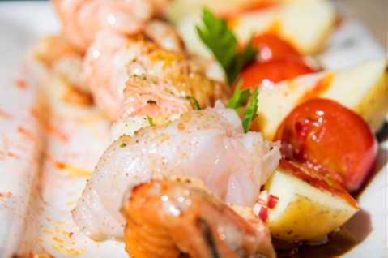
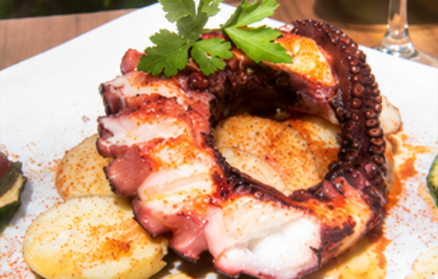
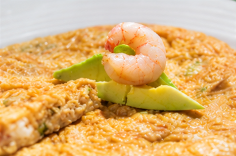
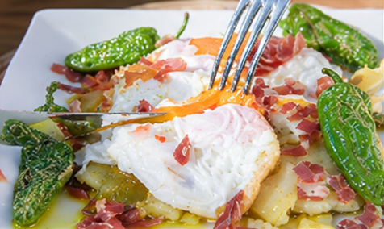
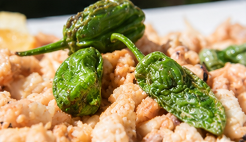
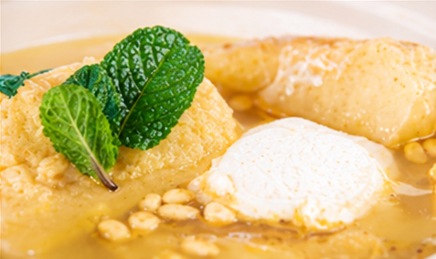
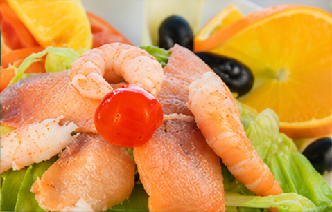
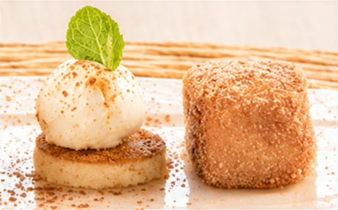
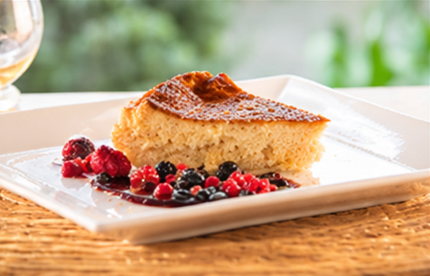
NUESTRO ENTORNO
Como se puede ver tenemos el enorme privilegio de estar situados en uno de los lugares más impresionantes y bonitos de la ciudad, la Alhambra. El restaurante La Mimbre se sitúa justo en la entrada del mirador que sube desde Dalila, da parada de taxis y a unos escasos metros de las taquillas de la Alhambra, aunque la parte que a nosotros siempre nos ha gustado más, es que desde nuestro jardín-comedor puedes estar viendo la torre y el arco del Agua, parte del monumento y a su misma vez formar parte de los frondosos bosques que rodean el complejo. Es el oasis perfecto donde resguardarse antes o después de la visita.
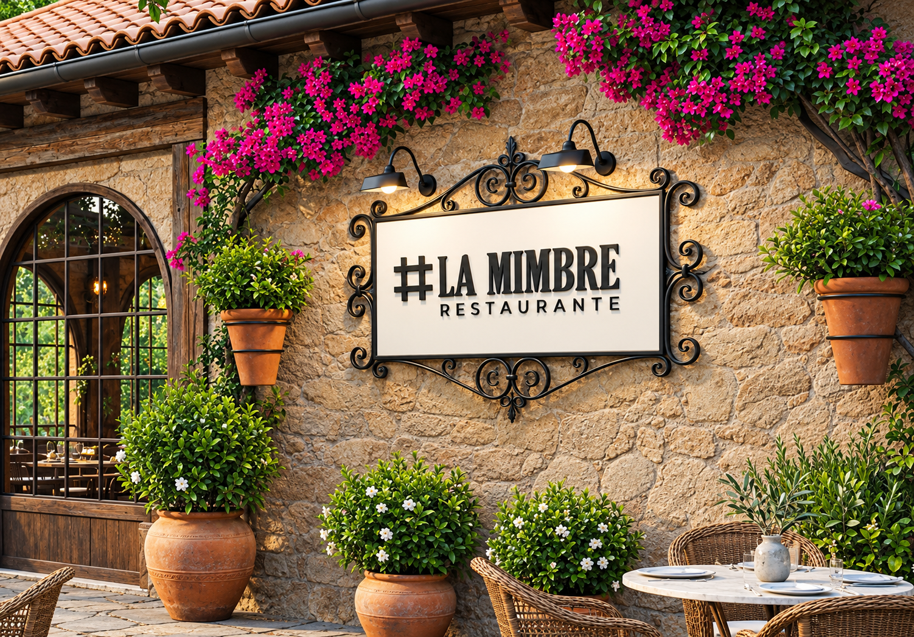
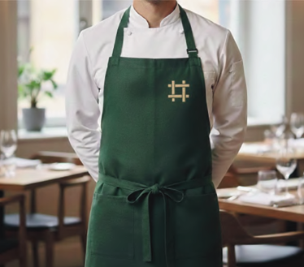
NUESTRO EQUIPO
A lo largo de los años han trabajado en el Restaurante La Mimbre mucha gente; familiares, amigos y personas que han pasado a formar parte de la familia del restaurante.
Actualmente la 6ª generación del restaurante empieza a tomar las riendas del negocio familiar acompañado de un maravilloso equipo sin el que no se podría continuar con la labor que llevamos desempeñando casi 150 años.
«Hoy he subido a la Mimbre, por la cuesta del Rey “Chico” mi mente se abre al recuerdo, por los espacios perdidos. ¡Oh, adarves Alhivatas!, del ciprés y el arrayán, del jazmín y del geranio, del castaño y del nogal. Ya, por los Siete Suelos, junto a los Puentes del Agua, debajo de unas mimbres masus y duendes te embriagan. Recordando aquel Quiosco, de tonos azul y plata que fue refugio de artistas siendo orgullo de Granada. Hoy, en mi paseo del viento, el recuerdo ensalza el alma. Aquí con mi amigo Félix, y la sonrisa en la cara, nos tomamos unas copas en la montaña más clara. Que no se puede aguantar, un rincón con más solera que el Quiosco de la Mimbre del de la Alhambra canela. Y pegaito al Generalife, con olor a hierbabuena, parece que suenan guitarras del Sacromonte y sus cuevas».
A mi amigo Félix afectuosamente
Atalfo Barroso Jiménez, Granada 2003